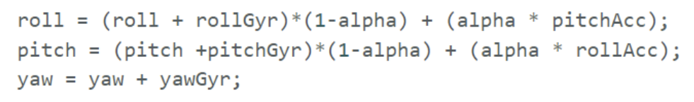
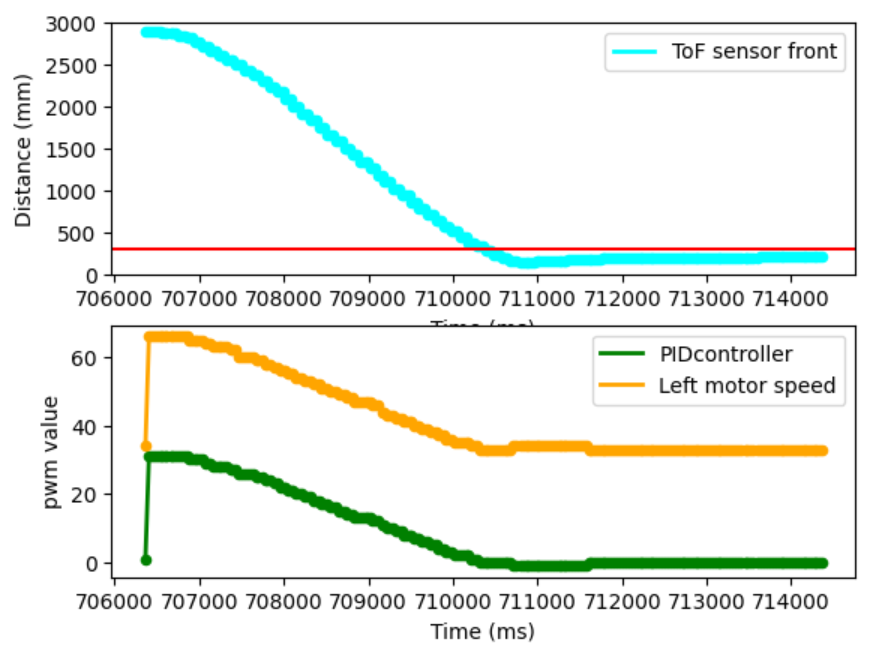

ECE 5160 Fast robot
Yi Wang · yw2586 · yw2586@cornell.edu
Basic describtion for the course.
Basic describtion for the course.
The basic “Blink” example is used to test the LED on the module and make sure that the code can be correctly uploaded to the board. The “Blink” code first sets the pin connected to the LED to HIGH for one second, and then sets the pin to LOW for another second. These two processes are repeated in a loop to achieve the blinking effect.
The “Example4_Serial” code is used to test the serial communication between the computer and the Artemis board. In the following example, the Artemis board first sends a counting test to the serial monitor through UART communication. Then, it allows the user to send a string from the computer, and the Artemis board can echo whatever that was sent to the serial monitor. This showcast that serial communication is correctly set up between the computer and the Artemis module.

The “Example02_AnalogRead' code is used to test the temperature sensor on the Artemis board. The example code uses a function ‘analogReadTemp()’ to obtain the raw ADC counts from the temperature sensor and send the data to the serial monitor. To better visualize the measurements, the temperatures are computed as Fahrenheit degrees and are printed on a serial plotter.

The “Exampel1_MicrophoneOutput” code is used to test that the pulse density microphone on the Artemis board can correctly measure the frequency of the voice in the environment. In the following video, a tone is produced that plays from low to high frequencies. It can be observed that the frequency of the environmental voice that was printed on the serial monitor gradually increases and can match with the frequency of the tone that was being played.
A program is built based on task 4 that can turn on the LED on the Artemis board when the note “A” is being played. Firstly, the frequency of note “A” should be measured to identify a proper frequency range when the LED should be lighted. Then, set the LED pin to HIGH if the detected loudest frequency is within that range, and set the LED pin to LOW otherwise.
The ECHO command can be used to test the bluetooth communication between the host computer and the Artemis board. A class “enum” is defined that stores all the commands that are to be communicated between the computer and the Artemis board. By sending the ECHO command with a character string from the computer, the board can receive the string and echo it back to the computer.

The “GET_TIME_MILLIS” command is used to return the time in milliseconds from the Artemis board. The millis() function is used to obtain the current time and is appended to a string and sent to the computer.

A notification handler is declared to automatically collect data whenever a certain type of string characteristic is detected. ‘RX_STRING’ is the string characteristic that is being used for communication, and the notification handler can be started by “ble.start_notify(ble.uuid[‘RX_STRING’],notification_handler)'.

A “COLLECT_and_SEND_1s” command is declared that can collect a time stamp and transmit the time stamp to the computer within the same loop. The following code repeats the loop for one second, and the speed of the messages that are sent can be calculated by dividing the number of messages received to the time gap in between. As shown in the following figures, there are 25 messages sent over 605 milliseconds, and the size of the message string was measured to be 60 bytes. Therefore, the data rate is around 2479 bytes per second. And the effective data rate is around 41 float numbers per second.

A global array “time_temp_array” was declared to store a maximum of twenty time stamps. And the command “SEND_TIME_DATA” is used to loop through the array and send each stored timestamps back to the host computer as a string.
To collect temperature readings and the time when they are recorded, both the temperature and the time are stored to a global array within the same loop. The temperature readings from the Artemis board sensor can be obtained by calling the function getTempDegC().
The first method in Task 4 sends data to the computer each time when a timestamp is recorded. Whereas the second method in Task 5 first collects data in an array and then sends them to the computer as a package. Since the Artemis board has 384kB of RAM, the maximum number of 16-bit data it can hold is 192000 assuming that the entirety of the Artemis RAM is used to store transmission data. Therefore, the estimated time before RAM runs out is 6’24’’ if the sampling rate is 500Hz, and 32 minutes if the sampling rate is 100Hz.
In this task, the ECHO command is used to transmit messages with different sizes between the Artemis board and the computer. The effective data rate is 42 data per second for a 5-byte reply, and is 991 data per second for a 120-byte reply. As it can aslo be observed that the effective data rate would increase as the message size increases. This shows that short packets introduce more overhead, and larger replies can reduce overhead.

Another command is designed to test the reliability of the communication established between the Artemis board and the computer when data is being transmitted at a high rate. Through this command, the Artemis board would send both the index and the time stamp, and the delay is removed from the transmission loop. As shown in the following figure there is no index missing, thus showing that the communication at high data rate is reliable.


The objective of thie lab is to obtain the accelerometer and gyroscope readings from the IMU module 'ICM-20948', and calculate pitch, roll, and yaw from the sensor readings.
Fig 1: Artemis IMU connections
The 9DoF IMU module 'ICM-20948' is hooked up to the Artemis board through a QWIIC connector. And the ICM 20948 library from SparkFun should be installed to set up the IMU in Arduino IDE. The example code “Example1_Basics” is a good demonstration of getting the accelerometer, gyroscope, and compass data from the IMU module. In the example code, the ‘AD0_VAL’ variable should be changed from 1 to 0. The ‘AD0_VAL’ represents the last bit of the I2C address in the IMU, and should be set to zero when the ADR jumper is closed. As shown in the figure below, the ADR jumper is connected on the board and the I2C communication address is 0x68.
The following screenshot shows that the example code could print out the accelerometer, gyroscope, and compass data from the IMU module.
Fig 2: Show that the IMU example code works
Pitch and roll angle of an object can be computed through the accelerometer data in x, y, and z axis. This is because the acceleration caused by gravity on these three axes would be changed when the object rolled or pitched.
Fig 3: Calculateing pitch and roll from accelerometer data
To estimate the accuracy of the accelerometer, the IMU is taped on a box and rotated to {-90, 0, 90} degrees pitch and roll. Ten sets of data were collected to calculate the average angle. The results are shown in the table below.
Table 1: Pitch and Roll measurements in different angles
There are errors in the results. It could have been caused by an uneven table or that the IMU was not taped perfectly parallel to the edges of the box. Considering that this is only a rough estimation, a two-point calibration is not used to adjust the accuracy of the accelerometer.
To find out how much the noise would affect the accelerometer measurement, a fourier transform could be applied to analyze the amount of noise present in high frequencies. 800 sets of data were collected within 6 seconds at a sample rate of 134.8 samples per second. The IMU was also performing some simple acceleration motions when the data was collected. The collected signals in time and frequency domains are plotted in the following figures.
Fig 4: Accelerometer signal in time domain
Fig 5: Accelerometer signal in frequency domain
The frequency spectrum shows that the magnitude of signal at frequencies less than 5Hz is much larger than that of the high frequency. To further verify the result, a low pass filter was implemented on the accelerometer data. The cutoff frequency of a LPF is typically equal to or less than half the sampling rate. This is because the sampling frequency is larger than (or equal to) twice the maximum frequency of the signal to avoid aliasing. Therefore, half of the sampling rate is a good cutoff frequency to reconstruct the signal. If the cutoff frequency is too high, the LSP is not sufficient to eliminate all the replicates of the spectrum outside the baseband. And if the cutoff frequency is too low, the signal could not be well reconstructed and its shape distorted. The equations for a digital LPF is shown below:

where SR is signal rate and fc is cutoff frequency. A comparison of the frequency spectrum between original data and the filtered data is shown below.
Fig 6: A comparison between the signal with or without low pass filter
The gyroscope could also be used to calculate the pitch, roll, and yaw of an object. Instead of returning the absolute angle like the accelerometer, the gyroscope could only measure the rate of angular change. And the angles are computed by accumulating the gyro readings with respect to time.
Several tests were conducted to determine the appropriate sampling frequency. It was discovered that higher sampling frequencies result in greater accuracy. When the sampling frequency is too low, the collected samples may not adequately track the motion of the object, particularly when it undergoes frequent changes in movement. A test was conducted where the object was pitched from 0 to 90 degrees five times. It was observed that the data sampled at 10Hz exhibited higher accuracy compared to that collected at 2Hz.
Fig 7: Sample rate: 10Hz. Pitch from 0 to 90 degrees five times
Fig 8: Sample rate: 2Hz. Pitch from 0 to 90 degrees five times
Although the gyroscope is less affected by noise, the angular data would drift overtime because they are computed based on accumulation of past data. A way to combine the advantage of these two sensors into design a complementary filter and fuse these two sensors. A parameter ‘alpha’ is used as a weighting factor to balance the data collected from the accelerometer and the gyroscope. In this example, the weight for accelerometer alpha was determined to be 0.1, this enables the drift from gyroscope to be corrected by the accelerometer.
However, since the yaw angle cannot be derived from the accelerometer, its drift cannot be corrected. As shown in the figures below, the angels measured by the gyro alone have a drift for more than 15 degrees within 60 seconds. Whereas, the pitch and roll angles measured by fused sensors did not produce any significant drift.
Fig 9: Angles measured by Gyroscope
Fig 10: Angles measured by Accelerometer and Gyroscope fused sensor
To transmit the data between the Artemis and the host computer with a higher sampling rate, a few adjustments were made. Firstly, instead of sending the data through bluetooth each time when they were collected, sampled data should be stored to separated arrays for storing timestamps, accelerometer, and gyroscope. Secondly, all the unnecessary delays and serial.print statements should be removed from the loop that collects the data. To store more arrays in limited RAM, timestamps were stored as int; accelerometer and gyroscope data were stored as floats. The following screenshot shows that 1000 sets of data were sampled and transmitted to the computer within 7.189 seconds, with a sample rate of 139.1Hz. That is, each dataset was sampled at an average of 7.189ms.
Fig 11: 1000 sets of data sampled within 7.189 seconds
However, storing 1000-datasets is not the limit for Artemis. One dataset contains one integer and 6 floats, that is 26 bytes each dataset. Assuming that up to 80% of dynamic memory in the Artemis could be used to store these arrays, a total of 307.2kB could be used (out of 384kB). Theoretically, 11815 sets of data could be stored.
The robot car can move in very high speed. The remote controller features three control buttons: one for moving forward or backward, another for turning left or right, and a third button that activates the cyclone function of the robot car.
The objective of this lab is to connect two time-of-flight (ToF) sensors to the Artemis board and measure the distance using it.
There are two time-of-flight (ToF) sensors that will be attached to the front and side of a robot, so that the robot can collect distance measurement data from both directions. There are various things to consider before the lab, particularly the I2C sensor address, and how to connect the two ToF sensors to the Artemis board and receive transmission from them simultaneously. The I2C address of both the VL53L1X ToF sensors are the same (0x29). Therefore, we need to manually change the address of one of the sensors during setup. Consequently, the ‘XSHUNT’ pin from one of the sensors should be connected to the Artemis GPIO pin, so that the sensor could be turned off while the address of the other ToF sensor is being programmed. A wiring diagram for the connection is shown in the figure below.

Fig 1: Sketch of wiring diagram

Fig 2: ToF sensors conencted to the QWIIC breakout board
By connecting the ToF sensor one at a time to the Artemis, the example code ‘Wire_I2C’ can print out the I2C address of the sensor that is connected. The I2C address output is shown in the figure below. The output I2C address is 0x29, which is the same default address for the VL53L1X sensor on power-up as described in the datasheet.
Fig 3: Artemis scanning for I2C device
The ToF sensor operates in two modes: short distance mode, with a measurement range set to 1.3 meters, and long distance mode, with a measurement range set to 4 meters. The short mode theoretically offers higher accuracy for distances under 1.3 meters, while the long mode is more susceptible to sensor noise. To confirm this, multiple measurements were taken repeatedly at distances ranging from 0.1m to 2.7m. As illustrated in the figure below, the ToF sensors were taped to a box and measured the distance from the sensors to the bookshelf.
Fig 4: Sensor data measurement
The average measurement results are depicted in the following figures. It was observed that the ToF sensor in both short and long distance modes can accurately track the actual distance. Additionally, it was noted that the sensor exhibited higher accuracy when measuring distances between 0.7m and 1.3m in both modes.
Fig 5: Measurement results in different modes
For rapidly moving robots, it's crucial that the sensor detects obstacles at longer distances and reacts promptly. Given that the long distance mode can measure up to 4 meters and was found to maintain high accuracy below 1.3 meters through experimentation, it could be more advantageous in future lab applications.
To receive I2C transmission from the two ToF sensors in parallel, another sensor object with class ‘SFEVL53L1X’ should be declared to differentiate the two sensors. Then we need to modify the I2C address of one of the sensors in ‘setup()’. The ‘XSHUNT’ pin from one of the ToF sensors is connected to a GPIO pin on the Artemis. It can be used to shut down the ToF sensor when changing the I2C address of another sensor using the ‘setI2CAddree()’ function. The following screenshot shows that two sensors can work in parallel.
Fig 6: Serial Output when two ToF working in parallel
It is essential that the code can execute quickly, and should not wait until the ToF sensors return valid data. The following code was written to examine the maximum speed that the Artemis can execute and compare it with the period that the ToF sensor finishes a measurement.
Fig 7: Sensor speed estimation code and outputs
It was found that the Artemis takes 3 to 4 milliseconds to execute a loop, and the ToF sensor takes 56 milliseconds to finish a measurement.
The distance data detected by the two ToF sensors should be transmitted via Bluetooth to the host computer for a duration of 5 seconds. This can be accomplished by implementing an additional Bluetooth command that, when invoked, records a set period of time-stamped ToF measurements into arrays in an interrupt manner. These measurements are then compiled into a string and sent through Bluetooth. The measurement results are depicted in the following figures.
Fig 8: ToF data sent over bluetooth
Overall there are two types of infrared sensors: active and passive. Passive infrared sensors function by detecting the infrared radiation emitted by objects around the device, while active infrared sensors emit a light which bonus off an object and returns back to the sensor. And an active infrared sensor would use that infrared light to determine the distance of the object it hits. Passive infrared sensors consume less power and produce less noise, and they are less susceptible to interference and clutter. However, they do have drawbacks, including lower resolution and accuracy, and an inability to measure the precise distance of the target. On the other hand, active infrared sensors offer several advantages, such as functioning effectively in low-light or dark environments, providing higher resolution and accuracy, and enabling measurement of the exact distance to the target. Nonetheless, active sensors demand more power and generate more noise. The distance measuring sensors employed in this lab necessitate high accuracy in measurement and are active sensors.
Several experiments were taken to test the sensitivity of the ToF sensors to colors and texture of the target. The targets with varying materials were placed at 30cm away from the ToF sensor. The experiment scenarios and measurement results are shown in the following figures. It was found that the ToF sensor can correctly measure the target regardless of the color. However, measuring a fur target with an unsmooth surface produced higher error than the other texture.
Fig 9: ToF measurements for different color and texture
There are two motors on a car, each motor controls two wheels on the same side of the car. In order to control the motors spinning at a high speed, two output pins on a motor driver should be connected in parallel and are driven by the same input signal so that the driving current available for each motor is increased. The pins used for control on the Artemis should be able to generate analog PWM signals. In the lab, pins 4, 5, 12, and 13 were used to control the input signals (AIN and BIN) on the motor drivers DRV8833. And the output of the motor drivers were connected to the motors. An illustration of the motor connections are shown in Fig 1.

Fig 1: Connection Diagram
The batteries used for powering the Artemis board and the motors should be separated to prevent the noise generated from the motors to interfere with the Artemis. In this design, a 3.7V 650mAh battery is used to power up the Artemis, and a 3.7V 850mAh battery is used to power up the motor drivers. These devices should be common grounded.
The Vin and GND pins on a motor driver should first be connected to a power supply instead of a battery for better debugging. The motor driver DRV8833 functions under 2.7V to 10.8V voltage supply. Since the battery used to drive the motor drivers produces 3.7V, this voltage level is set up for the power supply. The current compliance of the power supply was adjusted to 2A to prevent voltage drop when the motors were spinning.
analogWrite(pin, value) takes a value between 0 and 255, and generates a PWM wave to the pin. The value determines the duty cycle of the PWM wave, and thus the spinning speed of the motor. By setting pin4 to low and writing pin5 to a PWM signal, the motor driver output could generate another PWM wave and control the motor to spin in one direction. A code snippet is shown below.
A motor driver was connected to Artemis and power supply, and an oscilloscope was used to monitor the input and output signals of the motor driver. The photo of the setup is shown in Fig 2, and the oscilloscope measurement is shown in Fig 3.

Fig 2: Setp with power suppy and oscilloscope hookup

Fig 3: Oscilloscope measurement
In Fig 3, the CH1 yellow signal represents the input signal (from pin 5) to the motor driver, and the CH2 blue signal represents the output signal from the motor driver. As it can be seen, by setting the value to 100 in ‘analogWrite’, a PWM signal with duty cycle less than 50% could be generated. The input signal is from Artemis and takes 3.3V logic. The output signal also has the same duty cycle but with a higher voltage level.
Next, connect the AOUT and BOUT pins from one motor driver to a motor and run the code above. Both wheels on one side should spin in one direction. A recording of wheels spinning as expected is shown below.
Repeat the soldering process for the other motor and motor driver. And connect the 850nAh battery to drive both motors. Fig 4 is a picture of all the components secured in the car. Run the following code snippet to test the functionality of both motors. And a recording is shown below.

Fig 4: The robot car
The lower limit of the PWM value should be found to understand its range, and the PWM values to the motor driver should not be set below this threshold in future labs. After a few experiments, it was found that the lower limit lies between 24 and 26 for both motors to drive forward. The following video demonstrates when controlling the car to first move forward with value 24, and then move backward with value 26. It could be seen that the car didn’t move under 24 and could move under 26.
The motors may not have the same torque output even when they are controlled by the same PWM. Therefore, a calibration factor is necessary to drive the car in a straight line. As it could be observed from the previous video that the car would turn left when both motors were controlled by the same PWM waves. This means that the motor on the right spins faster. After several experiments, it was found that the car could move in a straight line when the left value is 1.07 times larger than the right value.
The frequency analogWrite generates is about 220Hz (as shown in Fig ). As has been tested in this lab, at this frequency, the motor speed could be controlled smoothly by changing the PWM duty cycle.The sampling rate of IMU data (in lab 2) is 139.1Hz, and the sampling rate of ToF sensors (in lab 3) is around 18Hz. Since the PWM frequency is higher than the sensor sampling rate, the motor could theoretically react fast enough based on the sensor data. Therefore, this frequency is adequately fast for these motors. There is a way to manually configure the timers so that a faster PWM signal could be generated, this could help maneuver the motors faster over more extreme conditions.
To find the lowest PWM value to keep the robot running once it is in motion (forward and turns), a more systematic approach was attempted. The initial PWM value was set to 20, and the left motor would first be controlled to first go straight and then turn left or right. After these two motions, the blue LED on the Artemis would blink twice, and then the value would increase by two. According to previous calibration results, the value to control the left motor was also scaled by a factor of 1.07 with respect to the right motor. The experiment is shown in the following video. When the PWM value was 42 on the right and 44 on the left, the robot could keep its motion in the straight line. When the PWM value was 44 on the left.
The time stamped ToF data and motor PWM value should be sent over bluetooth so that it can help debugging during adjusting the PID controller. Furthermore, logged data from IMU were also recorded for future labs. When a command is sent over bluetooth to start the PID testing, a loop would run for 8 seconds and all data was recorded in a 2D array. The arduino code for storing data into an array is shown in Fig 1. The Artemis would first check if data from IMU and ToF sensors are ready, and call function ‘recordData()’ to store them into dataArr[][] if they are. The loop will not be stalled if data is not ready.

Fig 1: Arduino code for recording sensor readings
The Arduino and python code for sending data over bluetooth is shown in Fig 2.
Fig 2: Arduino and python code for sending data over bluetooth
Theoretically, the ToF sensors can measure up to 4 m in the long distance mode. To measure how fast a basic loop can run and the sampling time, the following code was written (in Fig 3), and the results are shown in Fig 4. It was found that a control loop could run every 4 to 7 milliseconds, and the sensor data were recorded every 97 milliseconds. That is, the PID control frequency is around 180Hz, and the sampling frequency is around 10Hz. However, since the RAM is enough for all the data, the sensor data would be stored every time the control loop runs in the future steps. That is, the dataArr would store the same ToF data from the last measurement if the ToF sensor is not ready.
Fig 3: Arduino code for measuring control and sample rate
Fig 4:Control and sample time results
The ToF sensors can measure up to 4000 mm, and the desired distance between the robot and the wall is 304 mm. The minimum PWM value for the robot to move is around 31, and the upper PWM limit was set to be 91. To spread the PWM value over all the possible distance, the Kp could be calculated as:
The proportional controller Kp represents how fast the robot should move based on the distance between current position and target position. The larger Kp is, the robot would move faster towards the target, and possibly create larger overshoot and oscillation. The Kp value could start testing from 0.06 and observe results. However, it was found that Kp = 0.06 is too large a value for the robot, the robot has too large an overshoot and hit the wall, after several adjustments, it was found that Kp = 0.015 yields better results.
Next was adjusting the Kd value. The derivative controller can estimate the future trend of the distance error by comparing the current error and past error. The larger the Kd term is, the better control over damping and overshoot would be. After several iterations, it was found that when the robot was placed 1.5 meters away from the wall and used a PD controller with parameters Kp = 0.015 and Kd = 100, there was almost no damping.

Fig 5
The integral controller Ki could help eliminate residual error by integrating all the past errors. As shown in Fig 5, there is a small steady state error between the robot and the target. After properly adjusting Ki, this error should be eliminated. After several attempts, it was found that a very small value Ki = 0.0001 is enough to eliminate this error. The PID controller code is shown in Fig 6. A demonstration of the result is shown in Fig 7 (Kp = 0.015, Ki = 0.0001, Kd = 100).
Fig 6: The PID controller code
Fig 7: Conservative PID controller
As shown in the video above, the robot moves very slowly towards the target. A more aggressive controller using a larger Kp term was developed to increase its speed. However, the aggressive controller has larger overshoot and damping. A demonstration of the result is shown in Fig 8 (Kp = 0.03, Ki = 0.0001, Kd = 1000).
Fig 7: Aggresive PID controller
As shown in Fig 4, the sampling rate is around 10Hz, and the PID controller in the previous sections could only use old ToF data when the sensor is not ready to return the new measurement. This means that the PWM control over the motors is limited to 10 Hz using the previous method. Another method called extrapolation is used in this section. It calculates the slope based on the last two sensor readings, and estimates the current distance based on it. A demonstration of the extrapolation method is shown in Fig 9. A slope k would first be calculated based on posD1 and posD2 and their corresponding time, and then predict the currentPos based on the slope k. The arduino code for extrapolation is shown in Fig 10, and a demonstration is shown in the following video and Fig 11.
Fig 9: A illustration of the extrapolation method
Fig 10: The arduino code for extrapolation
Fig 11: Extrapolation
A wind-up protection for the integrator controller is necessary and was implemented as shown in line 268-269 in Fig6. This is because the distance error is very large at the beginning and the integral term could easily accumulate to a very large value over a very short time. This is dangerous especially when the integral value exceeds the maximum value an ‘int’ could be stored in Arduino, which is 32767. Without the wind-up protection, the robot's behavior would become random and uncontrollable within a few seconds of starting, once the integral error overflows.
In every PID control loop, the Artemis would check if IMU and ToF sensor measurements are ready and store relevant data into an 2D array ‘dataArr[][]’. In this lab, each P, I, and D terms for both straight and orientation control were stored into dataArr and sent over bluetooth for better PID adjustments. The yaw angle and the speed of left and right motors were also stored into ‘dataArr’. The Arduino code for storing data and the python notification handler code are shown in Fig 1.
Fig 1: Arduino and python code for sending data over bluetooth
The objective of this lab is to control the robot at a preset angle through PID control. The yaw angle of the robot is calculated by the gyroscope from the IMU (shown in Fig 2). The first few measurements from IMU could sometimes be inaccurate and this error would accumulate to the yaw and cause the measurements to drift. Therefore in this lab, the first two yaw measurements were ignored. The difference between the current yaw angle and the target angle (defined as ‘OrienTarget’ in Fig 3) is calculated as the error signal in PID control. P term is proportional to this error, I term is the integral of this error over time, and D term is the rate of change of this error. Since the yaw angle was calculated from the integral of the gyroscope measurement, the D term could also be deduced directly from the gyroscope measurement ‘myICM.gyrZ()’. The calculated orientation error based on PID is then used as PWM difference for the motors on each side. For example, if the IMU detected that the robot orientation is left to the target angle, then the PID controller would control the left motor to rotate forward, and the right motor to rotate backward. A table that illustrates the relationship between PID result and the motor PWM control values are shown in Fig5.
Fig 2: Calculate the yaw angle
Fig 3: Orientation PID control code
Further on, we could combine the forward moving control PID implemented in lab 5 together with this orientation controller. The ‘ctrlBase’ PWM value is calculated based on the forward control PID result, and the ‘ctrlDiff’ PWM value is calculated based on the orientation PID result (shown in Fig 4. If the robot was going straight but deviated a bit to the right. Then the orientation PID controller would return a positive result, and decrease PWM value in the left motor and increase PWM value in the right motor.
Fig 4: Use PID results to control the speed of motors

Fig 5: Relationship between PID result and the motor PWM control values
As it has been discussed in Lab 5, the PID control frequency is around 180Hz, and the sampling frequency is around 10Hz. The PID adjustment principles are as described in Lab 5. The proportional term Kp can adjust rotation speed with respect to angle error; the integral term Ki can cancel the angle offset; and the derivative term can lower the damping of motion. After a few adjustments, it was found that when Kp = 10, Ki = 8, Kd = 1.5, the robot can control the orientation well. The corresponding data measurements and recorded video are shown below. The yaw angle is plotted on the left figure in Fig 6; the PID controller calculated error is plotted in the middle; and the PWM value for each motor is plotted on the right.
Fig 6: Orientation Control
Another experiment was performed to first maintain the robot position for 2 seconds, and then orient the robot for 90 degrees. The results are shown in Fig 7.
Fig 7: control the robot to turn right by 90 degrees
The orientation controller was also combined with the distance controller, and the code is shown in Fig8. To test this new controller, another function was designed to first control the robot to move straight without orientation for two seconds and then turn right by 90 degrees. The corresponding data measurements and recorded video are shown below.
Fig8: straight_orien
A wind-up protection for the integrator controller is necessary and was implemented as shown in line 268-269 in Fig6. This is because the distance error is very large at the beginning and the integral term could easily accumulate to a very large value over a very short time. This is dangerous especially when the integral value exceeds the maximum value an ‘int’ could be stored in Arduino, which is 32767. Without the wind-up protection, the robot's behavior would become random and uncontrollable within a few seconds of starting, once the integral error overflows. A demonstration of the robot with or withour windup protection is shown in Fig 9.